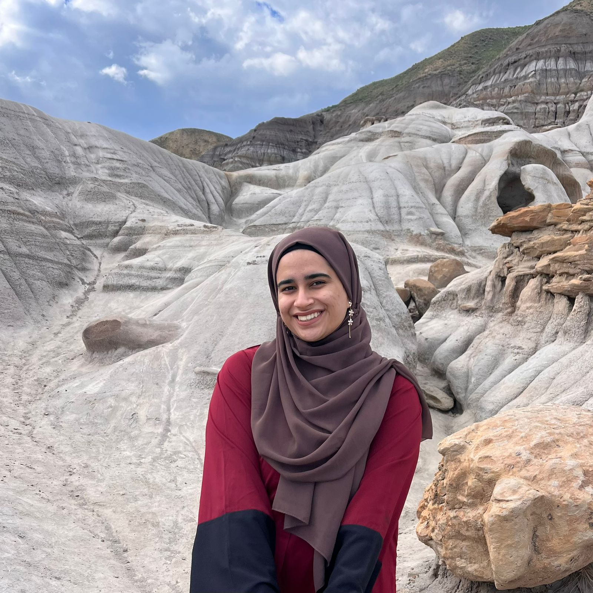
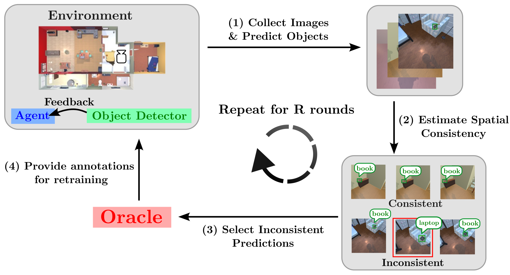
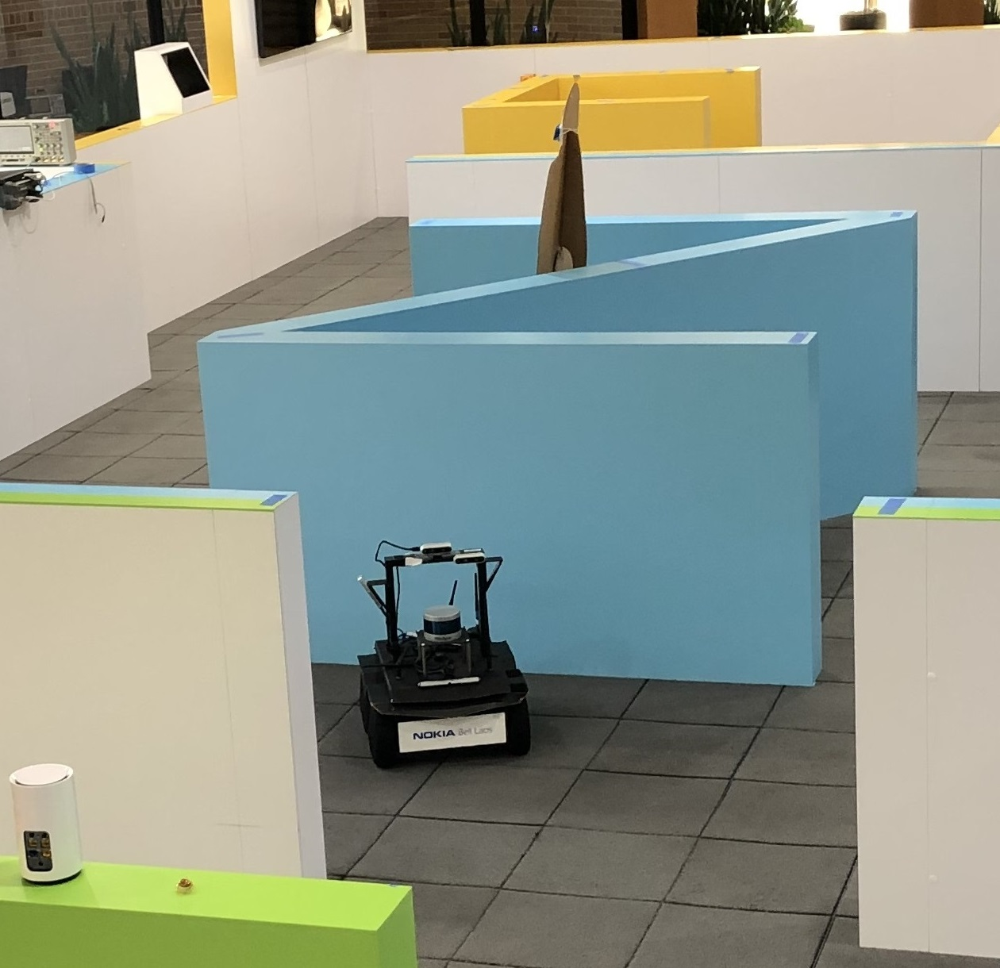
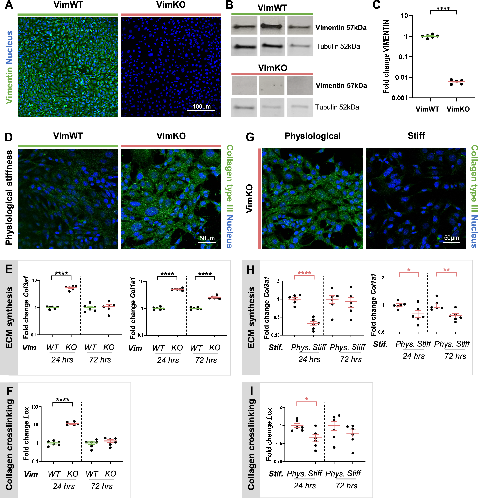
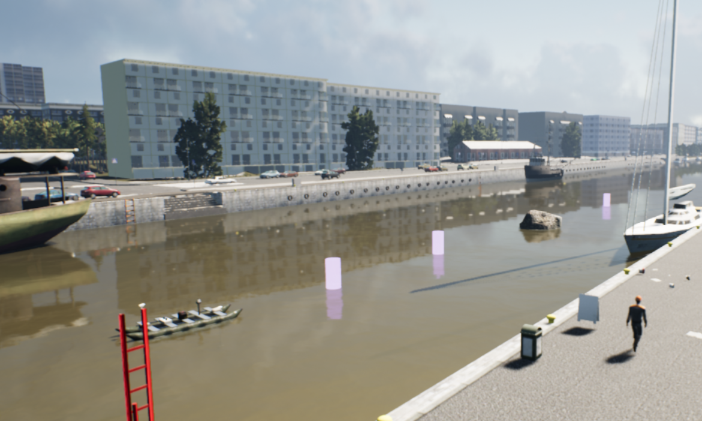
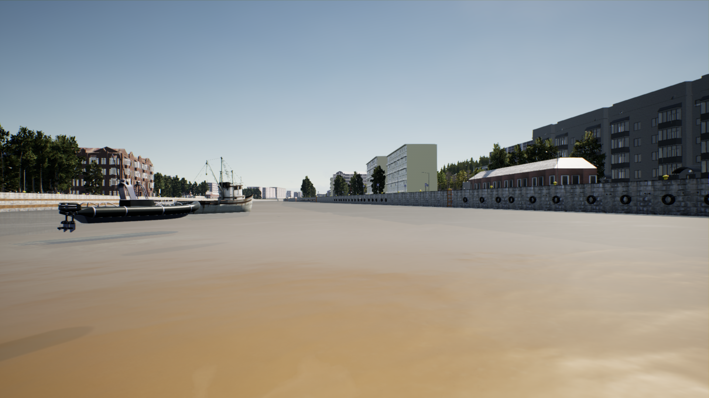
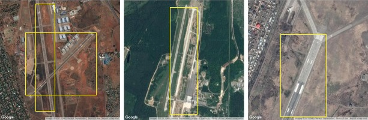
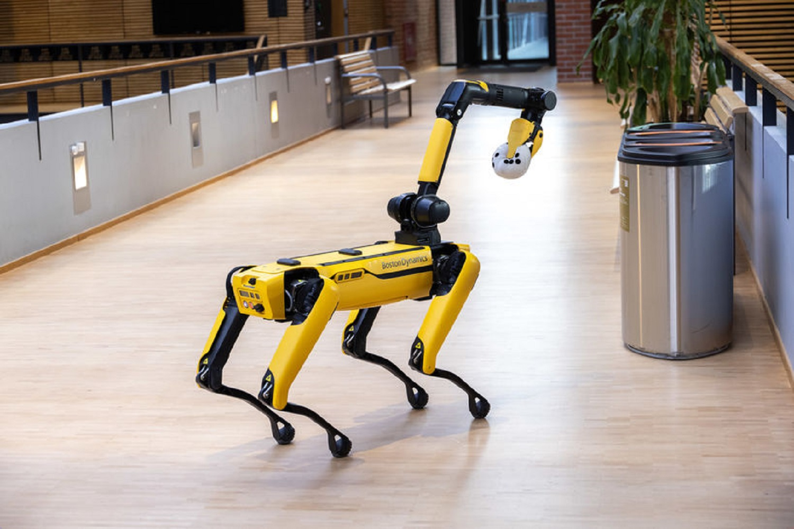

I am a Doctoral Researcher in the Aalto Robot Learning Group at Aalto University, advised by Prof. Joni Pajarinen. My research focuses on enabling robots to operate robustly in partially observable, dynamic, and unstructured environments. I investigate methods that enable robots to adapt to uncertainty, reason about incomplete information, and interact effectively with complex real-world environments.
Previously, I completed an Erasmus Mundus Joint Master's in Engineering of Data-intensive Intelligent Software Systems (EDISS) at Åbo Akademi University and the University of the Balearic Islands, worked on autonomous load handling for heavy machines at Hiab, and was a research fellow at Nokia Bell Labs.


IEEE/RSJ International Conference on Intelligent Robots and Systems (IROS), 2026

IEEE International Conference on Robotics and Automation (ICRA), 2023


MDPI Journal of Marine Science and Engineering, 2022


Digital Image Computing: Techniques and Applications (DICTA), 2021
Hiab AB — EP4596321A1, filed Dec 2024, published Aug 2025
Hiab AB — EP4597249A1, filed Dec 2024, published Aug 2025

"Spot the Robot Dog" demo — Shaking up Tech, Aalto University (January 2026)